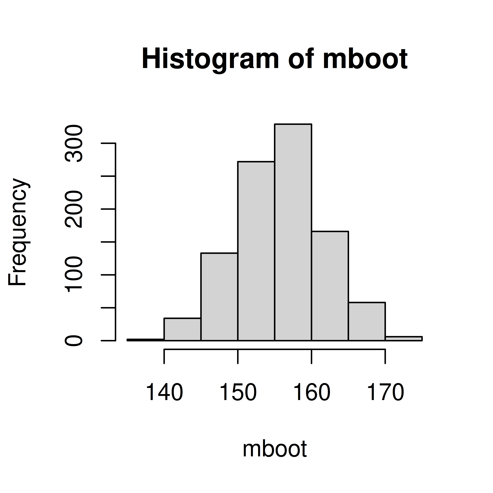
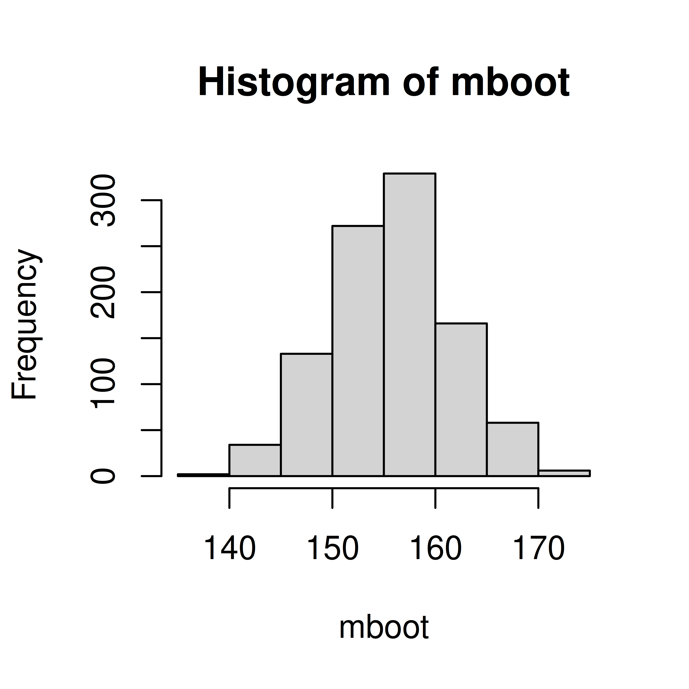

obs <- c(145, 165, 134, 167, 158, 176, 156, 189, 143, 123)
mboot <- replicate(1000, {
x <- sample(obs, size=10, replace=TRUE)
mean(x)
})
hist(mboot)
## 95% confidence interval
quantile(mboot, c(0.025, 0.975)) 2.5% 97.5%
144.6 167.5 Exercise 1 You measure the Hb value in 10 50-year old men and get the following observations; 145, 165, 134, 167, 158, 176, 156, 189, 143, 123 g/L.
obs <- c(145, 165, 134, 167, 158, 176, 156, 189, 143, 123)
mboot <- replicate(1000, {
x <- sample(obs, size=10, replace=TRUE)
mean(x)
})
hist(mboot)
## 95% confidence interval
quantile(mboot, c(0.025, 0.975)) 2.5% 97.5%
144.6 167.5 (m <- mean(obs))[1] 155.6(v <- var(obs))[1] 395.1556(s <- sd(obs))[1] 19.87852The sample size is small (\(n=10\)) and the population standard deviation unknown, hence we use the t-statistic;
\[T = \frac{\bar X - \mu}{\frac{s}{\sqrt{n}}}\] and compute the 95% confidence interval as
\[\mu = m \pm t_{\alpha/2} \frac{s}{\sqrt{n}}\]
n <- length(obs)
t <- qt(0.975, df=9)
##95% confidence interval
c(m - t*s/sqrt(n), m + t*s/sqrt(n))[1] 141.3798 169.8202Exercise 2 The 95% confidence interval for a proportion can be computed using the formula \(\pi = p \pm z SE,\) where \(\pi\) is the population prportion, \(p\) the sample proportion and the standard error \(SE = \sqrt{\frac{p(1-p)}{n}}\). \(z=1.96\) for a 95% confidence interval.
We study the proportion of pollen allergic people in Uppsala and in a random sample of size 100 observe 42 pollen allergic people.
See lecture notes
Calculate a 90% confidence interval instead. Or sample more people than 100.
Change the z number,
\[\pi = p \pm z SE\]
For a 90% confidence interval use z=1.64
p <- 0.42
n <- 100
SE <- sqrt(p*(1-p)/n)
z <- qnorm(0.95)
c(p - z*SE, p + z*SE)[1] 0.3388168 0.5011832z <- qnorm(0.995)
c(p - z*SE, p + z*SE)[1] 0.2928678 0.5471322Exercise 3 A scale has a normally distributed error with mean 0 and standard deviation 2.3 g. You measure an object 10 times and observe the mean weight 43 g.
The measured weight is a random variable \(X \sim N(\mu, \sigma)\). You know that \(\sigma = 2.3\), \(\mu\) is the weight of the object.
## 95% confidence interval
m <- 42
sigma <- 2.3
n <- 10
z <- qnorm(0.975)
c(m - z*sigma/sqrt(10), m + z*sigma/sqrt(10))[1] 40.57447 43.42553z <- qnorm(0.95)
c(m - z*sigma/sqrt(10), m + z*sigma/sqrt(10))[1] 40.80366 43.19634Exercise 4 You observe 150 students at BMC of which 25 are smokers. Compute a 95% confidence interval for the proportion of smokers among BMC students.
Point estimate of proportion smokers; \(p=25/150=1/6\).
\(\pi = p \pm z SE\)
p <- 25/150
n <- 150
z <-qnorm(0.975)
SE <- sqrt(p*(1-p)/n)
## 95% CI
c(p - z*SE, p + z*SE)[1] 0.1070269 0.2263065